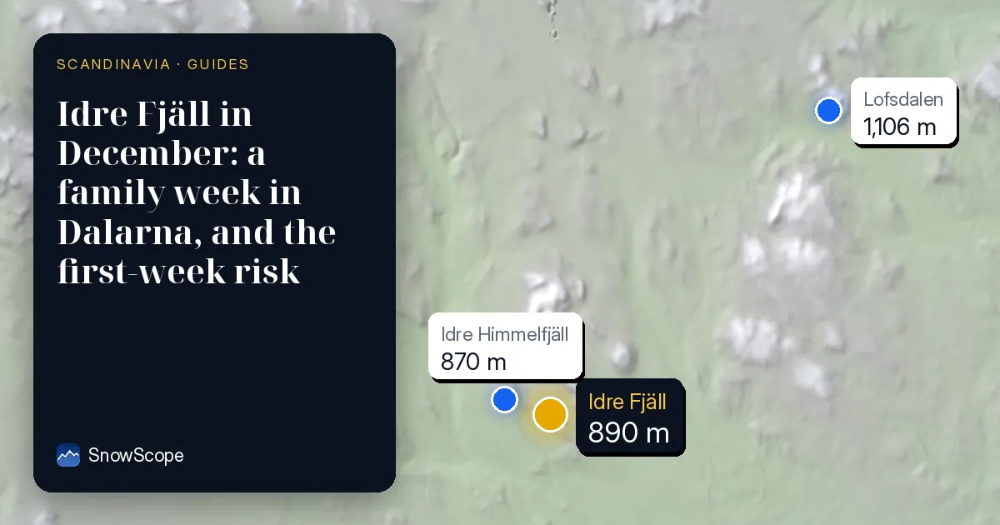
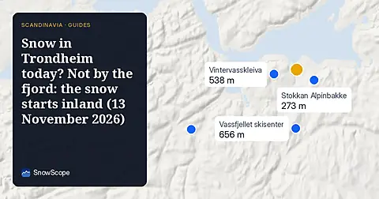

Idre Fjäll in December: a family week in Dalarna, and the first-week risk
Early December at Idre Fjäll is a gamble, but the week before Christmas and Christmas week itself offer much better odds. On a typical 15 December, the mid-mountain (733 m) sits at 32 cm—just above the 30 cm line where skiing feels easy on prepared runs. The shape of the month matters far more than the total snowfall.
See the live snow forecast for Idre Fjäll in the SnowScope appSnow depth, powder alerts and the 3D map, free.
When to book if you can choose
Only 39 % of past winters had 30 cm or more at mid-mountain in the first week of December. By 8–14 December, that share rises to 52 %. The jump comes in the week of 15–21 December, when 65 % of winters reach 30 cm or more. Christmas week (22–28 December) is the safest bet: 76 % of winters have good cover then.
At the summit (888 m) the picture is even better. Christmas week sees good snow in 83 % of winters. If your dates are flexible, shifting a week later makes a real difference to your chances of skiing on a solid base.


The risk of booking early December
Last winter (2025–26) shows why early December feels uncertain. Mid-mountain had just 28 cm on 15 December and 22 cm on Christmas Eve. That was skiable on the prepared runs, but rocks poked through on the sides, and many slopes needed careful grooming.
If you must book the first week of December, have a backup plan. Either look further north to higher mountains, or be ready to ski only on managed pistes and accept thin cover in places. Last winter's Christmas week was much better: mid-mountain had 29 cm on 24 December.
How the month has changed
December used to hold more snow. In the first 15 winters of our records (1980–81 to 1994–95), mid-mountain averaged 39 cm in December. In the most recent 15 winters (2011–12 to 2025–26), that dropped to 29 cm. The share of Christmas weeks with 30 cm fell from 87 % to 60 %.
This is a real shift, but it does not mean December is unreliable now—just that you need to pick your dates carefully. The mid-to-late month weeks remain fairly safe by regional standards.
Height makes a difference
The top (888 m) always holds more snow than the base (578 m). By Christmas week, mid-mountain has 30 cm or more in 76 % of winters, but the summit reaches that in 83 %. The usual first day with 30 cm at mid-mountain is 7 December; at the top it is 30 November—more than a week earlier.
If your family is comfortable on steeper slopes and upper runs, you have better odds of finding good base. The vertical gain is small (310 m), but those metres count in December.
What about Sälen instead?
Sälen, further south in Dalarna, looks similar on the map but has weaker December snow odds. Its rounded hills give one value across the whole area: 28 cm on a typical 15 December. Only 48 % of winters see 30 cm in the week of 15–21 December, compared to 65 % at Idre mid-mountain.
If you need a backup plan, Sälen is not it. If you can travel further, the higher mountains of Norway or north-west Sweden offer more reliable December depth.
Practical steps before you book
Idre Fjäll publishes lift prices through dynamic booking on its official site. Check the exact cost for your dates before committing. Neither here nor at Sälen could we confirm a fixed price on 13 November.
Book the week of 15–28 December if dates are flexible. If you must book early December, ask for a free cancellation clause and check the snow map again in late November. Short days mean planning time carefully around the light, and cold requires layers for young skiers.
Tips for skiers
- Avoid 1–7 December: only 39 % of winters have 30 cm at mid-mountain. The first week is a gamble.
- Target 15–28 December: the week before Christmas and Christmas week give 65–76 % odds of 30 cm or more at mid-mountain.
- Ski the top runs if you can: the summit (888 m) has good snow in 83 % of winters in Christmas week, compared to 76 % at mid-mountain.
- Book with a cancellation clause if December dates are fixed months ahead, and re-check the snow forecast in early December.
- Bring layers and plan the day around the short daylight. Last winter's thin snow on 24 December shows why grooming and careful line choice matter on early-season cover.
About these numbers
Resort snow depths are the deepest snow on the resort's upper slopes on the date shown; they are estimates for an area, not a measurement at one point. Forecasts can change. Always read the official avalanche bulletin before going off-piste.
Official avalanche bulletins: Lavinprognoser (Naturvårdsverket)
Cite this report
For research, teaching or the press: the numbers and charts are free to reuse under CC BY 4.0 with this citation.
SnowScope (2026), Idre Fjäll in December: a family week in Dalarna, and the first-week risk, https://snowscope.app/blog/en/2026/11/idre-fjall-december-family-ski-budget-sweden.html, accessed 2026-11-14
SnowScope (Atlas Labs). (2026, November 14). Idre Fjäll in December: a family week in Dalarna, and the first-week risk. SnowScope snow reports. https://snowscope.app/blog/en/2026/11/idre-fjall-december-family-ski-budget-sweden.html
BibTeX
@misc{snowscope2026idrefjalldecemberfamilys,
author = {{SnowScope (Atlas Labs)}},
title = {Idre Fjäll in December: a family week in Dalarna, and the first-week risk},
year = {2026},
month = nov,
howpublished = {\url{https://snowscope.app/blog/en/2026/11/idre-fjall-december-family-ski-budget-sweden.html}},
note = {Published 2026-11-14 20:11 UTC; accessed 2026-11-14}
}· CC BY 4.0 · Methods, data and tools →
Idre Fjäll: snow and temperature by height, this winter vs last (tools) →
Follow Idre Fjäll
Free: a message when fresh snow is coming, and the forecast every morning.
More snow reports

Umeå recorded 20 cm at Röbäcksdalen on 13 November after bare ground four days earlier. This is far ahead of the typical November depth.

Trondheim's coast is bare, but 18 cm lies inland at higher ground. SnowScope measured the snow on 13 November 2026.

Tromsø town has 6 cm but the Lyngen Alps hold 44 cm. SnowScope measured snow across the region on 13 November.